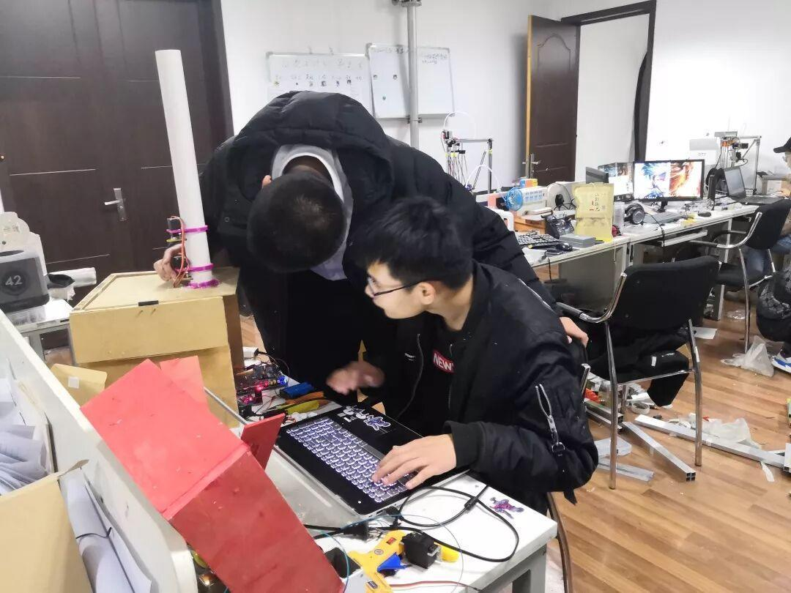
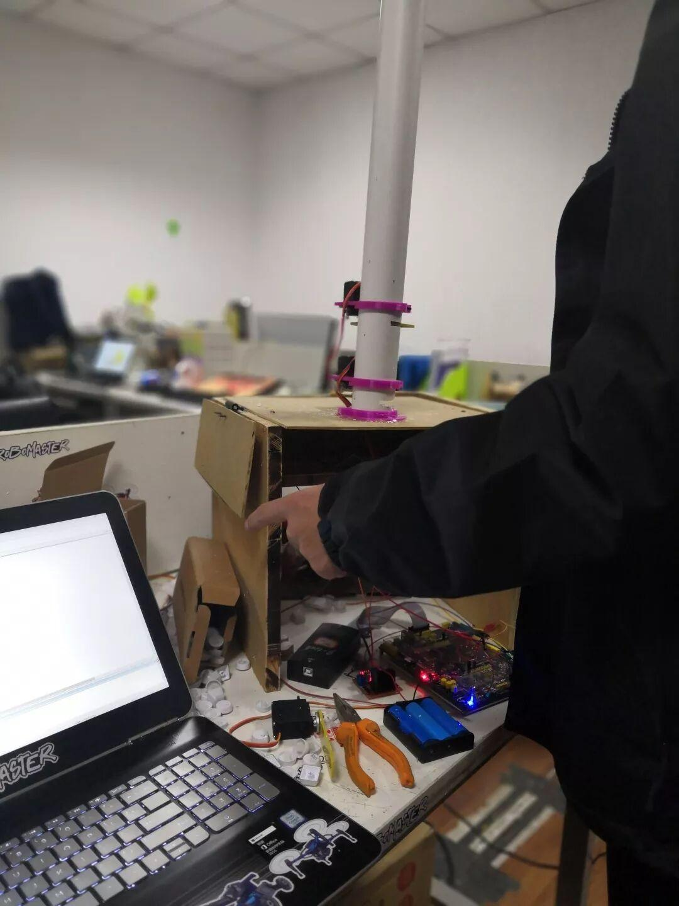
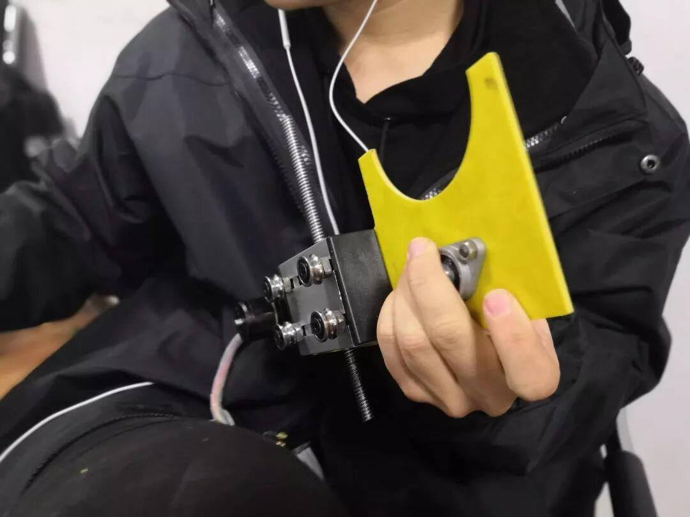
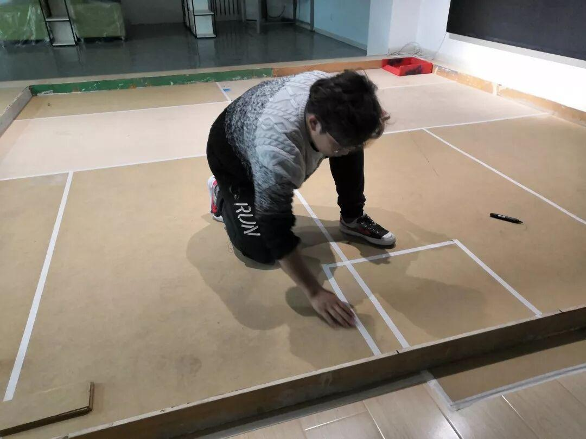
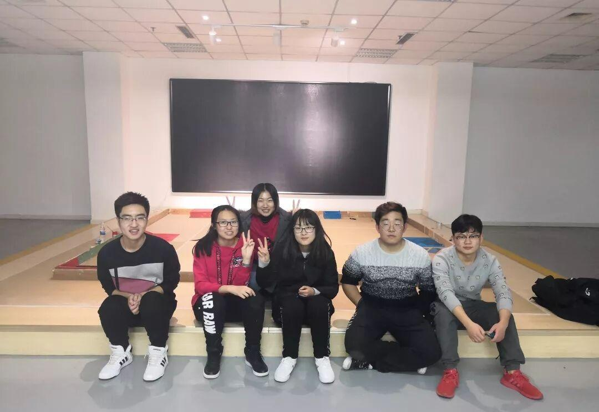

你们期待已久的场地，请签收

点击蓝字关注我们
你们期待已久的场地，请签收



咳咳，看到这些，我想你们会问，不是要看场地吗？这是些什么?只是一些板子而已啊！
不要抱怨啊，小编告诉你们哦！这，便就是你们要的场地······“碎片”， 可不要小看这些板子哦，在赛前学长们要根据比赛场地的大小和布局对这些木板进行精密的测量和剪切，只为参赛的小伙伴们能够有一个可以放肆奔弛的场地。

哇哇哇！快看！这是在干嘛？平时毛毛躁躁的小伙子们，怎么这么小心翼翼？你们想的没错，他们在拼接和测量场地中各个机关的位置，为了选手们能够有更好的比赛体验。

在大家的齐心协力下比赛场地终于搭建完毕，相信你们看到这里已经激情澎湃、跃跃欲试了，那么小车准备好，周六，我们在文体三楼等你哦！
喜欢机械，喜欢小车，喜欢······没错只要喜欢这里，就可以来这里，无论你是参赛，还是观战呐威，都可以来这里哦！另外我们还开设了直播，可以随时随地观看哦！

理工杯
邀请函
编辑：扈竞